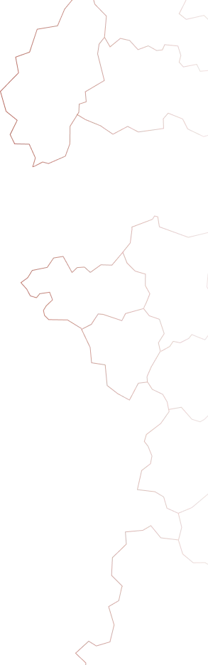
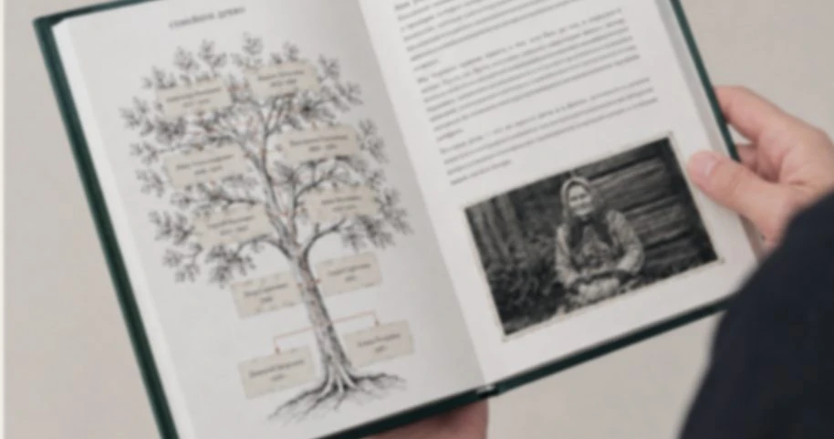
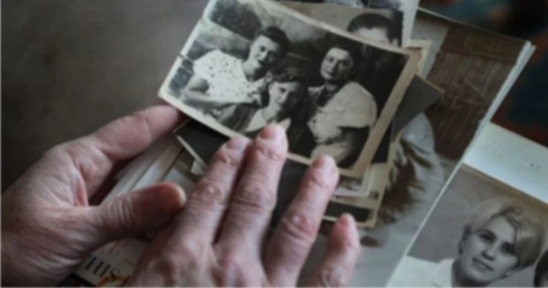
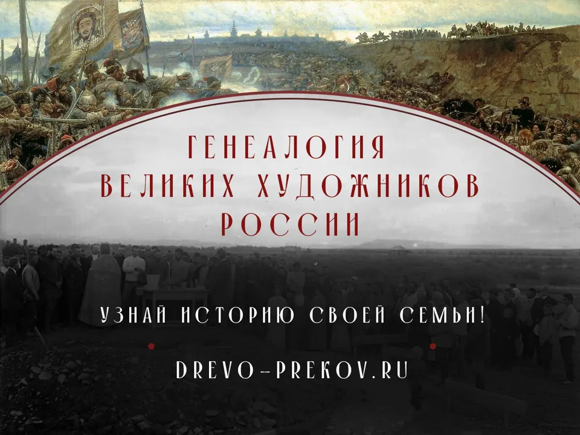
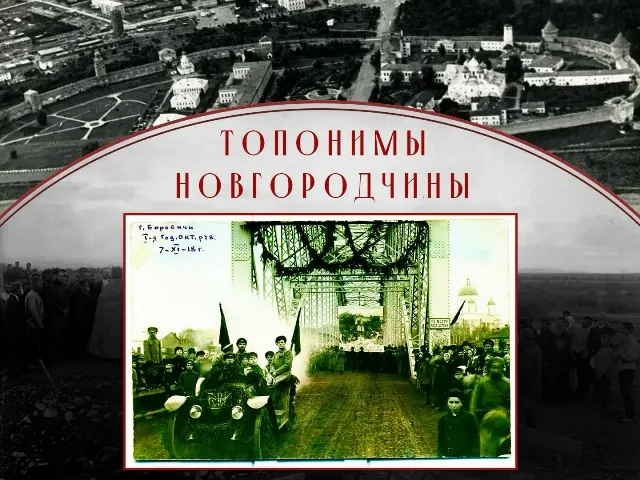
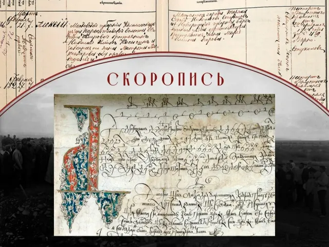
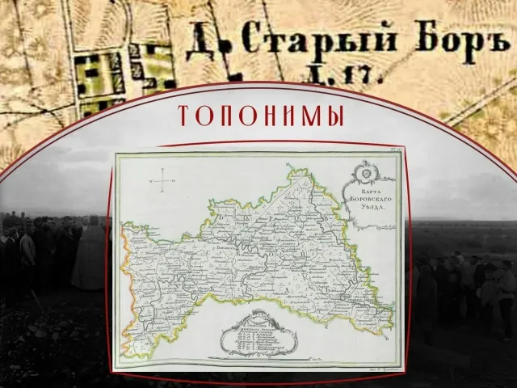
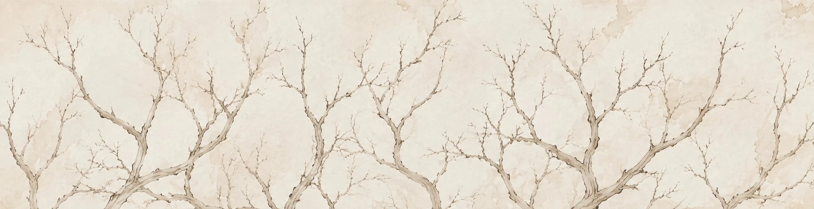

- От 1 месяца
- От 60 000 ₽
Родословная книга
архивный поиск + исследование + дизайн
Результаты архивного поиска в родословной книге: история рода, копии документов с расшифровкой и родословное древо. При желании оформим в печатное издание.
ПодробнееПроведём генеалогическое исследование: найдём записи о ваших предках в метрических книгах, ревизских сказках и других архивных источниках и оформим результат в родословную книгу или архивный свиток.
Обсудить историю семьиархивный поиск + исследование + дизайн
Результаты архивного поиска в родословной книге: история рода, копии документов с расшифровкой и родословное древо. При желании оформим в печатное издание.
Подробнееточечный поиск
Если вам не нужно исследование всей родословной, можно заказать отдельный поиск: установить личность предка, найти сведения о родственнике, проверить конкретную родственную связь.
Подробнеедизайн
Оформим сведения о вашей семье в родословное древо. Покажем, как связаны поколения, и подготовим макет, который можно распечатать или сохранить в цифровом виде.
Подробнеегенеалогический поиск + документальный отчёт
Тот же поиск по архивам без книжного издания: фотокопии документов с расшифровкой и поколенная роспись в подробном электронном отчёте.
Подробнееархивный поиск + исследование + дизайн
Результаты архивного поиска в родословной книге: история рода, копии документов с расшифровкой и родословное древо. При желании оформим в печатное издание.
Подробнееточечный поиск
Если вам не нужно исследование всей родословной, можно заказать отдельный поиск: установить личность предка, найти сведения о родственнике, проверить конкретную родственную связь.
Подробнеедизайн
Оформим сведения о вашей семье в родословное древо. Покажем, как связаны поколения, и подготовим макет, который можно распечатать или сохранить в цифровом виде.
Подробнеегенеалогический поиск + документальный отчёт
Тот же поиск по архивам без книжного издания: фотокопии документов с расшифровкой и поколенная роспись в подробном электронном отчёте.
ПодробнееМы работаем с первоисточниками. Находим архивные документы, расшифровываем старинные рукописи, в том числе XVI века, и сопоставляем сведения из разных источников. Так мы видим связи, которые не заметны с первого взгляда, и восстанавливаем родословную, в которой можно быть уверенным.
Мы не ограничиваемся тем, что лежит на поверхности, и идём вглубь веков, документ за документом.
Мы читаем дореволюционные документы и рукописи, которые без специальной подготовки разобрать почти невозможно.
Вы узнаете, кем были ваши предки, где они жили и чем занимались.
Каждое исследование мы выстраиваем вокруг вашей семьи: того, что уже известно, и того, что хочется узнать.

Мы занимаемся генеалогическими исследованиями и составлением родословных. Работаем с архивами России, Украины и Беларуси: находим метрические книги, ревизские сказки и другие записи, по которым можно проследить историю рода.
Каждое исследование начинается с того немногого, что известно семье, — имени, примерной даты, места рождения. От этой точки мы шаг за шагом продвигаемся вглубь: направляем запросы в архивы и ЗАГСы, расшифровываем рукописи и сверяем найденные сведения между собой.
Проводим генеалогические исследования по архивным документам и оформляем результат в удобном для вас формате

генеалогический поиск + исследование + дизайн
Семейная реликвия для детей и внуков. Проводим архивное исследование, находим документы о ваших предках и раскрываем их через исторический контекст. Результат оформляем в родословную книгу.
Узнать подробнее →
генеалогический поиск
Находим архивные документы о ваших предках и оформляем в подробный отчёт — фотокопии документов с расшифровкой и поколенная роспись.
Узнать подробнее →
Родился в Чугуеве Харьковской губернии. Дед — Василий Ефимович Репин — неслуживый казак, владел постоялым двором и вёл торговлю. Умер в 1830-х годах. Отец — Ефим Васильевич Репин (1804-1894) после введения военных поселений в 1817 году получил статус "военного поселянина" (это звание считалось презренным среди чугуевцев-казаков). Занимался торговлей лошадьми — ежегодно ездил за 300 вёрст на Дон и пригонял табуны на…

Путешествуя по Новгородской области, можно встретить многочисленные населенные пункты, названия которых восходят к корню бор-. Если взглянуть на растительность в округе, часто интуитивно становится понятно, что эти названия – вариации на тему бора как соснового леса. И действительно, Новгородская область славится своими хвойными лесами: они занимают половину территории, а 28% этих лесов занимают именно сосны. Корень…

Особенности почерков: от уставов до скорописи В XVIII–XIX веках почерки менялись. Если в XVII веке ещё встречался устав (буквы стояли ровно, как солдаты на параде), то позже в обиход вошла скоропись. Что это значит? — Буквы стали писаться слитно, с наклоном. — Появились выносные элементы — хвостики, завитки. — Одна и та же буква могла выглядеть по-разному.

А есть ли единая классификация топонимов? Их много, иногда они спорят между собой, поэтому мы не будем подробно останавливаться на громоздких классификациях лингвистов. На примере топонимов, образованных по природным признакам, а именно хвойного леса - бора, рассмотрим словообразование топонимов. Самый простой способ – прямой переход слова в топоним. Бывали в городке Бор, до которого можно добраться по канатной…
Спасибо Глебу! Провел работу по поиску информации о моём прапрадеде, составил очень интересный отчёт! Объяснил события из жизни прапрадеда в историческом контексте. Моя бабушка, внучка разыскиваемого джентльмена, в восторге!...
Хочу поблагодарить генеалога Глеба и историка Елену, которые помогли мне восстановить историю моей семьи и написать книгу о моих предках.
Это настоящая исследовательская работа: архивы, метрические книги, ревизские сказки, военные документы, переселенческие списки.
Они не просто собрали данные — они восстановили судьбы моих предков. И это бесценно.
Книга получилась не сухим отчётом, а живой, тёплой историей. Читается легко. Чувствуется уважение к прошлому и к памяти.
Если вы задумались о том, чтобы узнать историю своей семьи, восстановить родословную, найти предков — искренне рекомендую этих специалистов. Они делают свою работу с душой. И результат превосходит ожидания.
Спасибо за труд. За память. За то, что помогли сохранить историю моей семьи для будущих поколений.
Я обязательно продолжу исследование своего рода вместе с Глебом и Еленой.
Спасибо за проделанную работу!! Генеалогическое древо очень понравилось!! Юбиляр прослезился получив такой подарок!! В процессе работы замучала правками, спасибо за терпение!!
Рекомендую всем, кто хочет узнать историю семьи.
Оперативно, без лишних слов, все по делу
Заказала еще по 2м фамильным линиям исследование
Расскажите, что уже известно о вашей семье, — подскажем, с чего начать поиск и какой формат подойдёт. Написать можно здесь или в мессенджере.
